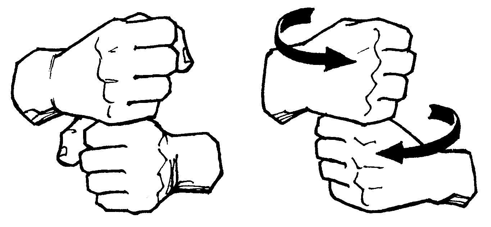

Consume vs. Produce vs. Produce Publicly

One of my goals for this year is to try to produce more and consume less. Not in the green, fixed-planetary-resources sense [1]. I mean to make more things, ideas, contributions. To be more creative. Creative in literal sense of that word: creating.
Rands said it well in his post this week, "The Builder's High'. If you haven't read it, go do so now. I'll wait. (and while you're at it, if you don't have him followed or bookmarked or whatever, do that too.)
I agree with pretty much everything he said in there. The good feeling that comes from actually making soemthing. How that's especially true now in light of the constant crush of everyone else's creations (he called them "moments").
Making takes many forms. Since I stink at woodworking and gardening and painting, I'll stick to the things I do enjoy, like writing and coding and cooking. Those fit less into the traditional mold of "building" or "making" but that's OK.
I want to take it one step further. Here are my three categories in value order. Numbers 1 and 2 we just spoke of, but 3 is new.
-
Consume. This is watching TV, playing video games, trashy reading. Sure I'm going to keep doing that, but it's not energizing.
-
Produce. Cooking a meal, learning something interesting. Maybe even reading something intellectually challenging, but that's pushing it.
-
Produce, In Public. Now, this is the toughie. It's one thing to do something creative, another to put yourself out there and tell poeple what you did, and why. By sharing the product, by talking people through the choices you made to get there, you're opening yourself up to criticism. But why not!
That is part of the reason why I reworked my blog over the holiday break, so I'd have a nicer platform for writing. Anything to lower the bar to produce.
[1] I'm not anti-green. I really appreciate the environmental warriors out there who walk the walk with real life choices to consume less. That's just not my bailiwick, for now at least.